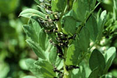

What are faba beans?
The faba bean (Vicia faba minor) is an ancient, cultivated, small-seeded relative of the garden broadbean (V. faba major). It is thought to have originated in west or central Asia.
The faba bean is grown mainly in Europe where it is primarily used as a livestock feed, however, it is an important winter crop for human consumption in the Middle East.
Why produce it?
Originally, the main interest in faba bean was as an on-farm, protein supplement for livestock feeding. For humans, the faba bean is eaten as a vegetable, and is used fresh, dried or canned. The faba bean has a protein content of 24-30 percent. Feeding studies have shown that faba bean can be a good poultry feed, (methionine should be added). It can replace soybean meal in rations for pigs weighing 80 lbs and over, as well as for calves,
lactating dairy cows, beef cattle and sheep.
The potential for using the faba bean as silage is good. Studies have shown growing dairy heifers and beef cattle gaining on faba bean silage at the same rate as animals on grass-legume silage. Dairy cows in heavy lactation have also performed well on faba bean silage.
Large acreages of faba bean are undertaken only when a grower has a contract to market the crop or intends to utilize the faba bean as a protein supplement or silage in livestock feeding. As the market for faba bean grows, this may change.
Where is it produced?
Britain, where both winter and spring types are grown, has been the largest European producer of faba bean. Commercial production of faba bean in western Canada first occurred in 1972 and the area under production has fluctuated widely since then.
The broadbean is produced in China, Europe, the Middle East, North Africa and South America and is consumed mainly as a vegetable. It can also be found growing in many vegetable gardens in Canada.
How much is produced?
Faba Bean covered 7,000 acres in Western Canada in 1995, and it is predicted that 15,000 acres will be seeded to faba bean by the year 2000.
What does it look like?
Faba bean looks like a smaller version of the garden broad bean and grows upright, ranging from 1 to 1.5 meters tall. It is an annual legume with one or more strong, hollow, erect stems. Faba bean has a strong tap root, compound leaves and large, while flowers with dark purple markings. A flower cluster may produce one to four pods. The pods are large (18 to 20 cm long and 1 to 2 cm wide) and green, turning dark at maturity- from brown to black. Three to four oblong/oval seeds are contained within each pod.
Flowering varies from 45 to 60 days and faba beans take 83 to 114 days to mature.
How is it produced?
As with other lentils, faba bean is seeded into summerfallow, and may be seeded into stubble. Faba bean is best adapted to the moister growing areas of the province and does best under relatively cool growing conditions. Hot, dry spells will result in wilting of the plants. Planting the bean in the brown soil zones and on droughty, light-textured soils may be done if proper irrigation is available.
Faba bean
- take up approximately their own weight in water before germinating.
- should not be grown on the same field more than once every three to five years and should not follow oilseeds or other legume crops in the rotation because of the danger of a rapid increase in soil-borne diseases.
- is able to withstand heavy frosts which may occur in late May or early June.
- should be seeded by May 10.
- is a large seed and should be seeded by a seeder with seedcups having large seed cells (to prevent seed cracking).
- should not be planted as a mixture with cereal grains (except barley) since it does not compete well with other plants.
- can be planted with barley; planted at the appropriate dates, in strips and harvested across the strips for a mixed barley-faba bean silage.
- is a legume and thus is able to use nitrogen from the air provided the seed is inoculated with the proper bacteria just prior to planting. Faba bean is one of the more efficient fixers of atmospheric nitrogen and requires a special strain of inoculum to ensure effective inoculation. Inoculants used for alfalfa, peas, and clovers are not effective on faba bean. Unlike pea and lentil, faba bean will fix nitrogen throughout the growing season.
- competes poorly with the common annual grass and broadleaved weed species, particularly when the faba bean is in the seedling stage or under conditions of moisture stress.
- is affected by
1. Asochyta blight, a seed-borne disease which causes stem, leaf and pod spotting. In severe infections, beans developing in the pods become
discolored and shrivelled.
2. Sclerotinia stem blight, which is common in sunflowers, rapeseed, and peas, and
3. Fusarium root rot, which attacks many legumes and oilseed crops.
Therefore, faba bean should follow a cereal crop in the rotation rather than an oilseed or legume crop.
4. Bean yellow mosaic virus has also been reported on faba bean in prairie
Canada.
In the dry climate of the prairies, faba bean will shatter if left standing until full maturity. The crop should be swathed when about 25 percent of the plants in a field have the lowest one or two pods turning color (to black). At this stage the moisture content of the crop is fairly high and this will mean a fairly long period of drying in the swath. Faba bean loses its leaves as it matures.
Faba bean should be combined in the early morning when the moisture content of the seed is higher and therefore less cracking will be likely to occur.
|